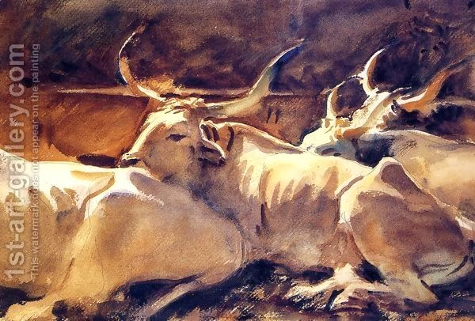

Yoma 58 - The ox and the goat
Having brought incense into the Holy of Holies, the High Priest (whose each action atones for some specific mistakes of the Jewish people), directs his steps to the golden Altar inside the Sanctuary, to atone for the defect in this Altar’s service throughout the year. He takes the blood of the ox and of the goat and applies it to the four corners (slight protrusions, also called "horns" of the Altar.) Rabbi Yoshiyah says that he mixes the two bloods in a vessel - based on the words "One application in a year." However, Rabbi Yonatan says that the "and" in the "ox and goat" teaches that there are two separate applications. Each one then needs to find an explanation for the Torah words used in his opponent's derivation.
How does the High Priest apply this blood? Some say that he starts with that corner which he comes to first, following the rule that one cannot pass on a mitzvah if it came his way, and then walks around, while others says that he stands in one place and reaches to all the four corners with his hand. What is the reason for the argument here? It may be that they argue whether, "he walks" means on foot or simply by hand. Others says that the argument is whether we derive the laws of the Inner Altar from those of the Outer Altar, or if the laws of the Inner Altar are deduced on their own.
Art: Oxen In Repose by John Singer Sargent